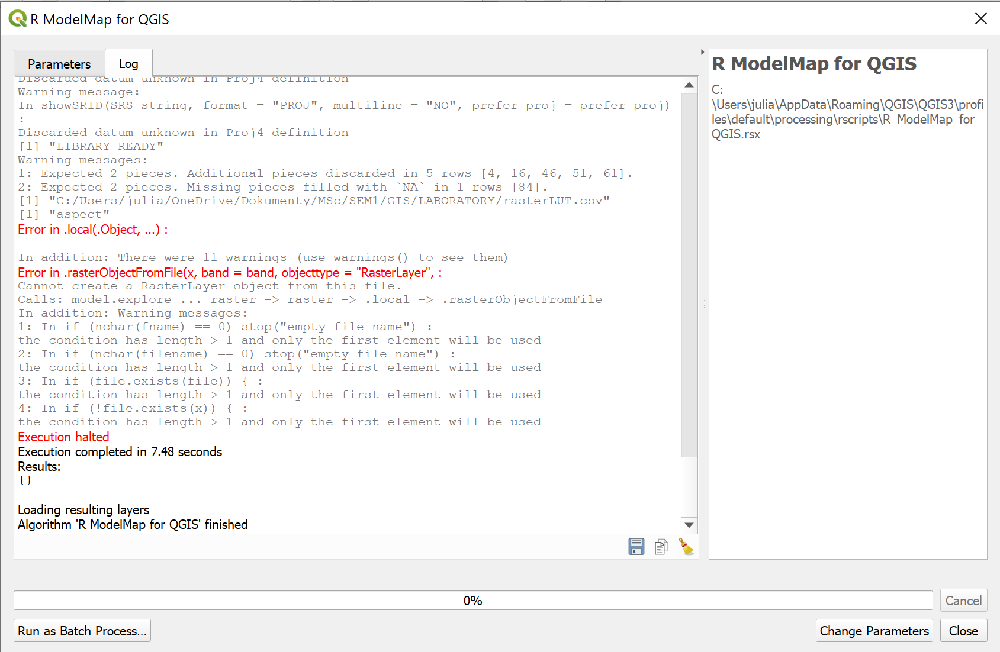
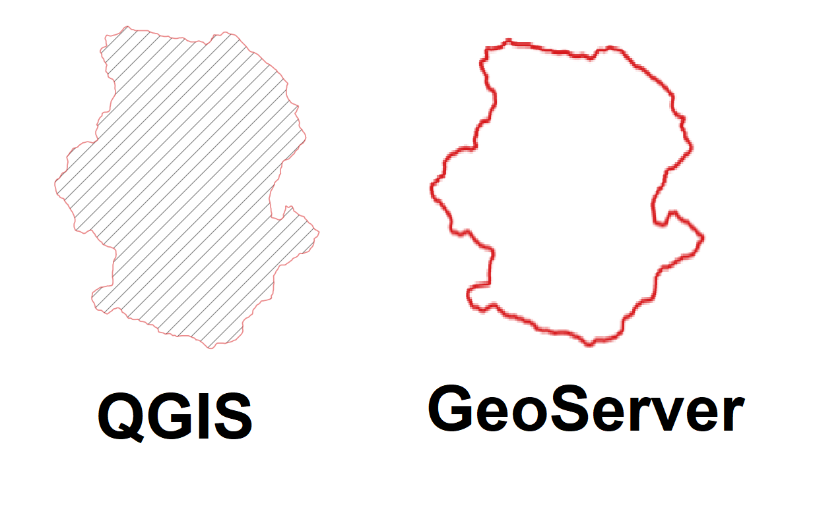

Problems
During some stages of the project we have encountered a few problems, which we are going to describe and give our solutions how to handle them.
Problem while running the RF algorithm
- Software
-
QGIS
- Description
-
During the first tries of classification with the RF model we had some errors as shown below:

- Solution
-
Thanks to the help of prof. Yordanov we figured out it was the result of a slightly different resolution of the dusaf raster and the null values in the aspect raster. After resampling the dusaf raster and replacing the Null values in the aspect raster, we also changed the extension of all raster layers to .tif. After that we didn’t have any issues with the algorithm.
Problem with styles from QGIS on GeoServer
- Software
-
GeoServer and QGIS
- Description
-
Styles imported to GeoServer from SLD files created by exporting style from QGIS sometimes they do not look the same.

- Solution
-
Only known solution as of right know is to manually correct sld files created by QGIS or writing sld style from the scratch, as the problem seems to be related to different namespaces used by default in geoserver sld styling (sld) and in qgis(se).